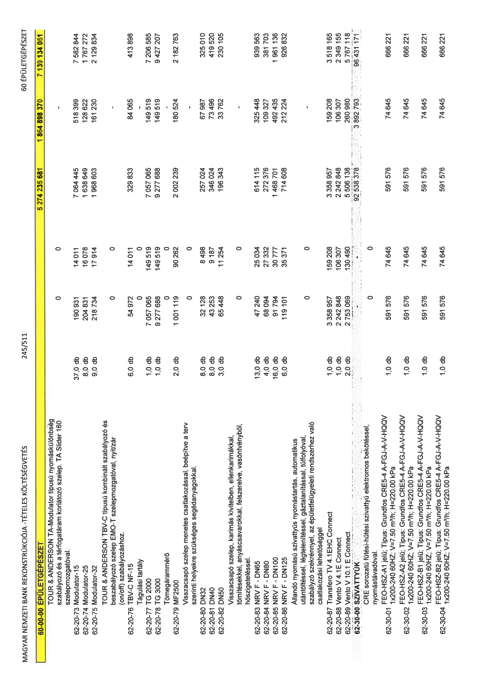

| Tétel | Menny. | Egys. | Anyag e.ár (net HUF) | Díj e.ár (net HUF) | Anyag összesen (net HUF) | Díj összesen (net HUF) | Anyag+Díj összesen (net HUF) |
|---|---|---|---|---|---|---|---|
| TOUR & ANDERSON TA-Modulator típusú nyomáskülönbség szabályozó és a térfogatáram korlátozó szelep. TA Slider 160 szelepmozgatóval. | 0 | 0 | 0 | 0 | 0 | 0 | 0 |
| 62-20-73 Modulator-15 | 37,0 | db | 190 931 | 14 011 | 7 064 445 | 518 399 | 7 582 844 |
| 62-20-74 Modulator-25 | 8,0 | db | 204 831 | 16 078 | 1 638 649 | 128 622 | 1 767 272 |
| 62-20-75 Modulator-32 | 9,0 | db | 218 734 | 17 914 | 1 968 603 | 161 230 | 2 129 834 |
| TOUR & ANDERSON TBV-C típusú kombinált szabályozó és beszabályozó szelep EMO-T szelepmozgatóval, nyit/zár (on/off) szabályozáshoz. | 0 | 0 | 0 | 0 | 0 | 0 | 0 |
| 62-20-76 TBV-C NF-15 | 6,0 | db | 54 972 | 14 011 | 329 833 | 84 065 | 413 898 |
| Tágulási tartály | 0 | 0 | 0 | 0 | 0 | 0 | 0 |
| 62-20-77 TG 2000 | 1,0 | db | 7 057 065 | 149 519 | 7 057 065 | 149 519 | 7 206 585 |
| 62-20-78 TG 3000 | 1,0 | db | 9 277 688 | 149 519 | 9 277 688 | 149 519 | 9 427 207 |
| Tömegárammérő | 0 | 0 | 0 | 0 | 0 | 0 | 0 |
| 62-20-79 MF2500 | 2,0 | db | 1 001 119 | 90 262 | 2 002 239 | 180 524 | 2 182 763 |
| Visszacsapó szelep menetes csatlakozással, beépítve a terv szerinti helyekre szükséges segédanyagokkal. | 0 | 0 | 0 | 0 | 0 | 0 | 0 |
| 62-20-80 DN32 | 8,0 | db | 32 128 | 8 498 | 257 024 | 67 987 | 325 010 |
| 62-20-81 DN40 | 8,0 | db | 43 253 | 9 187 | 346 024 | 73 496 | 419 520 |
| 62-20-82 DN50 | 3,0 | db | 65 448 | 11 254 | 196 343 | 33 762 | 230 105 |
| Visszacsapó szelep, karimás kivitelben, ellenkarimákkal, tömítésekkel, anyáscsavarokkal, felszerelve, vasöntvényből, hőszigeteléssel. | 0 | 0 | 0 | 0 | 0 | 0 | 0 |
| 62-20-83 NRV F - DN65 | 13,0 | db | 47 240 | 25 034 | 614 115 | 325 448 | 939 563 |
| 62-20-84 NRV F - DN80 | 4,0 | db | 68 094 | 27 332 | 272 376 | 109 327 | 381 703 |
| 62-20-85 NRV F - DN100 | 16,0 | db | 91 794 | 30 777 | 1 468 701 | 492 435 | 1 961 136 |
| 62-20-86 NRV F - DN125 | 6,0 | db | 119 101 | 35 371 | 714 608 | 212 224 | 926 832 |
| Állandó nyomású szivattyús nyomástartás, automatikus utántöltéssel, légtelenítéssel, gáztalanítással, túlfolyóval, szabályzó szekrénnyel, az épületfelügyeleti rendszerhez való csatlakozási lehetőséggel | 0 | 0 | 0 | 0 | 0 | 0 | 0 |
| 62-20-87 Transfero TV 4.1EHC Connect | 1,0 | db | 3 358 957 | 159 208 | 3 358 957 | 159 208 | 3 518 165 |
| 62-20-88 Vento V 4.1E Connect | 1,0 | db | 2 242 848 | 106 307 | 2 242 848 | 106 307 | 2 349 155 |
| 62-20-89 Vento V 10.1 E Connect | 2,0 | db | 2 753 069 | 130 490 | 5 506 138 | 260 980 | 5 767 118 |
| 62-30-00 SZIVATTYÚK | 0 | 0 | 0 | 0 | 92 538 378 | 3 892 793 | 96 431 171 |
| CRE sorozatú fűtési-hűtési szivattyú elektromos bekötéssel, nyomástávadóval. | 0 | 0 | 0 | 0 | 0 | 0 | 0 |
| 62-30-01 FEO-HSZ-A1 jelű; Típus: Grundfos CRE5-4 A-FGJ-A-V-HQQV 1x200-240 60Hz; V=7.50 m3/h; H=220.00 kPa | 1,0 | db | 591 576 | 74 645 | 591 576 | 74 645 | 666 221 |
| 62-30-02 FEO-HSZ-A2 jelű; Típus: Grundfos CRE5-4 A-FGJ-A-V-HQQV 1x200-240 60Hz; V=7.50 m3/h; H=220.00 kPa | 1,0 | db | 591 576 | 74 645 | 591 576 | 74 645 | 666 221 |
| 62-30-03 FEO-HSZ-B1 jelű; Típus: Grundfos CRE5-4 A-FGJ-A-V-HQQV 1x200-240 60Hz; V=7.50 m3/h; H=220.00 kPa | 1,0 | db | 591 576 | 74 645 | 591 576 | 74 645 | 666 221 |
| 62-30-04 FEO-HSZ-B2 jelű; Típus: Grundfos CRE5-4 A-FGJ-A-V-HQQV 1x200-240 60Hz; V=7.50 m3/h; H=220.00 kPa | 1,0 | db | 591 576 | 74 645 | 591 576 | 74 645 | 666 221 |
